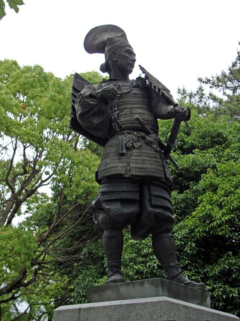
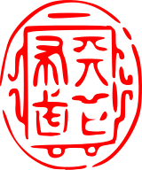

Oda Nobunaga (織田信長, Oda Nobunaga; June 23, 1534 – June 21, 1582) was a Japanese daimyō and one of the leading figures of the Sengoku and Azuchi-Momoyama periods. He was the Tenka-bito (天下人, literally "person under heaven") and is regarded as the first "Great Unifier" of Japan. He is sometimes referred to as the "Demon Daimyō" and the "Demon King of the Sixth Heaven."

Oda Nobunaga Statue
Oda Nobunaga was born on June 23, 1534, in Nagoya, Owari Province, as the heir to the Oda clan, led by his father, Oda Nobuhide. Nobunaga was given the childhood
name Kippōshi and became known for his eccentric behavior during his youth and teenage years. At the age of 8, he was given Nagoya Castle by his father and
was raised there until he seized Kiyosu Castle at the age of 21. As the legitimate first-born son, Nobunaga was groomed to succeed his father as the leader of the Oda clan,
with four karō assigned to train and educate him.
In 1546, Nobunaga changed his name to Oda Saburō Nobunaga and led the Oda forces in his first campaign against Kira and Ohama in Mikawa. In 1548, through a political arrangement, Nobunaga’s father made peace with Saitō Dōsan, the ruler of Mino Province, by arranging a marriage between Nobunaga and Dōsan's daughter, Nōhime. This marriage strengthened the political alliance between the two families, and Nobunaga began engaging in governmental affairs, gaining valuable political experience.
Unification of Owari (1551–1560)
In 1551, following the sudden death of Oda Nobuhide, a succession crisis erupted within the Oda clan, as some members opposed Nobunaga's leadership despite him being the rightful heir.
Nobunaga responded by raising a force of 1,000 men to intimidate his rivals and prevent any serious disruptions to the transfer of power. However, the daimyo Imagawa Yoshimoto took advantage of the situation by sending forces to besiege Anjō Castle,
where Nobunaga's elder brother, Nobuhiro, resided. To save his brother, Nobunaga negotiated by handing over a hostage, the young Matsudaira Takechiyo (later Tokugawa Ieyasu), to strengthen alliances. Despite a plot by Nobuhiro against him, Nobunaga chose to forgive his brother’s betrayal.
The Oda Family Crest
Shortly after Nobuhide's death, Yamaguchi Noritsugu, one of Nobunaga’s senior retainers, defected to the Imagawa clan. In response, Nobunaga launched an attack but was defeated in the Battle of Akatsuka,
losing control of eastern Owari. The following year, Nobunaga faced another challenge when his uncle, Oda Nobutomo, attacked his lands with the support of Shiba Yoshimune, the provincial governor.
Although Nobunaga repelled the attack and retaliated by burning the outskirts of Kiyosu Castle, Nobutomo initially escaped punishment. Around this time, Nobunaga's close advisor, Hirate Masahide, committed seppuku, possibly as a rebuke to Nobunaga, but the exact reasons remain unclear.
In 1554, Nobunaga gained a significant victory over the Imagawa clan at the Battle of Muraki Castle, recovering lost territory. He then turned his focus back to Kiyosu,
laying siege to the castle and forcing his uncle Nobutomo to commit seppuku. Around this time, the Saitō clan faced internal turmoil, with Saitō Yoshitatsu rebelling against and killing his father, Saitō Dōsan, in the Battle of Nagara-gawa. Nobunaga attempted to aid his father-in-law, Dōsan, but withdrew after learning of his death. This event weakened Nobunaga’s position,
causing several key Oda retainers to defect and support Nobunaga’s brother, Nobuyuki, who sought to challenge him. Despite initial forgiveness of Nobuyuki and his supporters after defeating them in the Battle of Ino, Nobuyuki plotted another rebellion in 1557, this time in collaboration with Oda Nobuyasu, lord of Iwakura Castle. Nobunaga, informed of the plot by Shibata Katsuie,
lured Nobuyuki into a trap and had him killed. By 1559, Nobunaga had crushed all resistance within the Oda clan, including the destruction of Iwakura Castle, solidifying his uncontested control over Owari Province.
Rise to power (1560–1568)
In 1560, Imagawa Yoshimoto, a long-standing rival of Nobunaga's father, Oda Nobuhide, launched an invasion into Owari with 25,000 troops, aiming to march towards Kyoto under the pretext of assisting the weak Ashikaga Shogunate. Despite having only 2,000 to 3,000 soldiers,
Nobunaga boldly rejected advice to take a defensive stance and instead opted for an aggressive counterattack. At the Battle of Okehazama, Nobunaga took advantage of Yoshimoto's overconfidence and attacked his camp during a thunderstorm, resulting in Yoshimoto’s death and a decisive victory for Nobunaga.
This triumph greatly increased Nobunaga’s prestige, and many samurai pledged allegiance to him, weakening the Imagawa clan's control over their Matsudaira allies, including Tokugawa Ieyasu.

1547 Nobunaga began his ambition to conquer Japan, starting with using the personal seal Tenka Fubu (天下布武)
Following this victory, Nobunaga forged key alliances with Matsudaira Motoyasu (later Tokugawa Ieyasu) and Takeda Shingen, solidifying his power base. In 1561, after the death of his brother-in-law Saitō Yoshitatsu,
Nobunaga took advantage of the weak leadership of Yoshitatsu's successor, Saitō Tatsuoki, and began a campaign to conquer Mino Province. Through a series of strategic battles and political maneuvers, including gaining the support of disaffected Saitō retainers,
Nobunaga weakened the Saitō clan. By 1567, Nobunaga had successfully captured Inabayama Castle, renaming it Gifu, and expressed his ambition to unify Japan under the slogan "Tenka Fubu" ("All Under Heaven, Spread by Military Force").
After consolidating his power in Mino, Nobunaga launched further military campaigns, including the conquest of Ise Province in 1567-1568 and an alliance through marriage with Azai Nagamasa of Omi Province. In 1568, Ashikaga Yoshiaki,
seeking revenge for his brother's assassination, approached Nobunaga to help him become the next shogun. Nobunaga seized this opportunity to march on Kyoto, defeating the Rokkaku clan in southern Omi and entering the capital in November 1568.
There, he installed Yoshiaki as the 15th Ashikaga shogun, though he refused any official title or rank, effectively positioning himself as the power behind the throne while respecting the authority of Emperor Ōgimachi.
Unification of Japan (1568–1582)
During the period of 1568–1582, Japan underwent unification under Oda Nobunaga. Nobunaga initially appointed Ashikaga Yoshiaki as shogun, but their relationship soured when several daimyo, including the Asakura and Azai clans, refused to submit to him.
Nobunaga faced resistance from an anti-Nobunaga alliance, which included various clans such as Asakura, Azai, and the Ikkō-ikki. After a series of battles, including the Siege of Kanegasaki and the Battle of Anegawa, Nobunaga successfully defeated the Asakura and Azai clans by 1573,
though he continued to face opposition from multiple groups.
During the Ikkō-ikki campaign, Nobunaga initially suffered defeat in the Siege of Nagashima, but he eventually crushed the Ikkō-ikki resistance through a brutal third siege. Additionally, Nobunaga faced challenges from Takeda Shingen, one of the most powerful daimyo.
After Shingen's death in 1573, the Takeda clan's power weakened. In 1575, Nobunaga and Tokugawa Ieyasu joined forces to defeat Takeda Katsuyori at the Battle of Nagashino, marking the end of the Takeda clan's military strength.
Azuchi Castle in 1580
Nobunaga's conflict extended to other adversaries, including the Mōri and Uesugi clans. In the Ishiyama Hongan-ji War, Nobunaga laid siege to the Ishiyama Hongan-ji temple, the main fortress of the Ikkō-ikki, and clashed with the Mōri navy. After several years of siege,
Nobunaga finally crushed the Hongan-ji defenses in 1580. In the north, Uesugi Kenshin managed to defeat Nobunaga's forces at the Battle of Tedorigawa in 1577, but Kenshin’s death in 1578 ended the threat from the Uesugi clan.
Beyond military campaigns, Nobunaga also consolidated his power through political measures. After defeating Ashikaga Yoshiaki and ending the Ashikaga Shogunate in 1573, Nobunaga solidified his position in Kyoto by establishing Azuchi Castle as his center of power.
Nobunaga successfully controlled strategic trade routes and safeguarded access to the capital, strengthening his rule until his final days in 1582.
Oda Nobunaga Death
In 1582, Oda Nobunaga was at the height of his power, serving as the de facto ruler of Japan. Alongside Tokugawa Ieyasu, Nobunaga had recently defeated the Takeda clan at the Battle of Tenmokuzan, forcing Takeda Katsuyori to flee before committing suicide.
With the Takeda eliminated, Nobunaga was preparing invasions of the Etchū, Shikoku, and Mori clan domains. At the same time, his former sandal bearer, Hashiba Hideyoshi, was besieging Takamatsu Castle, a key stronghold of the Mori clan. With the castle on the verge of falling,
Hideyoshi requested reinforcements from Nobunaga. Nobunaga left Azuchi Castle for Kyoto, intending to visit Honnō-ji temple for a tea ceremony, bringing only 30 attendants. Meanwhile, his son Oda Nobutada led 2,000 cavalrymen.
Depicting Nobunaga fighting in the Honnō-ji Incident
The event known as the Honnō-ji Incident occurred when one of Nobunaga's generals, Akechi Mitsuhide, turned against him. Mitsuhide, under the pretext of following Nobunaga's orders, marched his forces to Kyoto, where he decided to betray Nobunaga for unknown reasons.
On June 21, 1582, before dawn, Mitsuhide’s forces surrounded Honnō-ji. Nobunaga and his servants fought back, but they were ultimately overwhelmed, leading Nobunaga to commit seppuku. Mitsuhide also attacked Nobutada, who took his own life. Mitsuhide's betrayal, however, was short-lived.
Toyotomi Hideyoshi, upon learning of Nobunaga's death, quickly returned to Kyoto and defeated Mitsuhide's forces at the Battle of Yamazaki. Mitsuhide was later killed, and Hideyoshi ultimately completed the unification of Japan, fulfilling Nobunaga's vision.